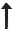

<!doctype html>
<head>
	<meta http-equiv="Content-Type" content="text/html; charset=utf-8">
	<meta name="viewport" content="initial-scale=1, maximum-scale=1, user-scalable=no">
	<title>ArcGIS test</title>
	<link rel="stylesheet" href="http://js.arcgis.com/3.11/esri/css/esri.css">
	<link rel="stylesheet" href="http://js.arcgis.com/3.11/dijit/themes/claro/claro.css">
	<script src="http://js.arcgis.com/3.11/"></script>
	
	 <style>
		html, body, #mapDiv {
		  padding: 0;
		  margin: 0;
		  height: 100%;
		}
	    #basemapToggle {
		  position: absolute;
		  top: 20px;
		  right: 20px;
		  z-index: 50;
		}
		
		#compass {
		position:absolute;
		top:20px;
		left:20px;
		z-index:51;
		font-size:2em;
		font-weight:bolder;}
		
	</style>
	
</head>

<body class="claro">

	<div id="compass">
		<!-- <div id="compassnorth">N</div> -->
		<!-- <div id="compassneedle"></div> -->
	</div>
	<!--div id="dir"></div-->
	<div id="mapDiv">
		<div id="basemapToggle"></div>
	</div>

	<script>
		console.log([dojo.version.major, dojo.version.minor, dojo.version.patch].join("."));
		
		
		var globalMap;
		require([
			"esri/map",
			"esri/dijit/BasemapToggle",
			//"esri/dijit/Directions",
			"dojo/parser",
			"dojo/on",
			"esri/geometry/Point",
			"esri/graphic",
			"esri/Color",
			"dojo/window",
			"esri/symbols/SimpleLineSymbol",
			"esri/symbols/SimpleMarkerSymbol",
			"esri/symbols/CartographicLineSymbol",
			//"esri/urlUtils",
			"dijit/layout/BorderContainer", 
			"dijit/layout/ContentPane", 
			"dojo/domReady!"
			], 
			function(Map,
					BasemapToggle,
					/*Directions,*/
					parser,
					on,
					Point,
					Graphic,
					Color,
					win,
					SimpleLineSymbol,
					SimpleMarkerSymbol,
					CartographicLineSymbol
					/*,urlUtils*/
					) {

				const SYMBOLFIX = -45;
				var lastCompassValue = 0;
				var graphic;
				window.counter = 0;
				
				
				//compass functionality
				//if apple, use webkitcompass, else, use event.alpha
				window.addEventListener("deviceorientation", setCompassValue,false);
				function setCompassValue(evt) {
					var compassHeading = evt.compassHeading || evt.webkitCompassHeading || -1;
					//not changed enough
					if(compassHeading !== -1){
						//setInterval(function(){alert(compassHeading + "--"+window.orientation);},1000);
						if(compassHeading - lastCompassValue < 5 && compassHeading - lastCompassValue > -5)
							return;
					}
					else{
						if(evt.alpha - lastCompassValue < 5 && evt.alpha - lastCompassValue > -5)
							return;
					}
					
					//if apple:
					
					
					if(compassHeading !== -1)
						lastCompassValue = compassHeading;
					//fix for angle in evt.alpha being the wrong way
					else
						lastCompassValue = -evt.alpha;
					
					if(graphic){
						graphic.symbol.setAngle(parseInt(lastCompassValue)+SYMBOLFIX);
						//graphic.symbol.setAngle(90+SYMBOLFIX);
						graphic.draw();
					}
				}
				
				
				//handle device's orientation change
				var supportsOrientationChange = "onorientationchange" in window,
					orientationEvent = supportsOrientationChange ? "orientationchange" : "resize";

				window.addEventListener(orientationEvent, function () {
					if (globalMap) {
						globalMap.reposition();
						globalMap.resize();
					}	
				}, false);
				
				
				//parse the element-type stylings
				parser.parse();
				//the map itself
				globalMap = new Map("mapDiv", {
					center: [24.850015, 60.239143],
					zoom: 16,
					basemap: "gray",
					slider:false

				});
				//pass the map to handler
				on(globalMap, "load", mapLoadHandler);
				//choose between map styles (eg. hi-fi vs. lo-fi)
				var toggle = new BasemapToggle({
					map: globalMap,
					basemap: "topo",
					basemaps: {
						"topo":{
							"label":"hi-fi",
							"url":"http://js.arcgis.com/3.11/esri/dijit/images/basemaps/topo.jpg"},
						"gray":{
							"label":"lo-fi",
							"url":"http://js.arcgis.com/3.11/esri/dijit/images/basemaps/gray.jpg"}
						}
				  }, "basemapToggle");
				  toggle.startup();
				//navigation
	/*			var directions = new Directions({
				  map: globalMap
				}, "dir");
				directions.startup(); 
	*/
				
				//add an arrow which should point to the same direction as user
				function addGraphic(pt) {
				  
				  
				  //var symbol = new SimpleMarkerSymbol(SimpleMarkerSymbol.STYLE_PATH, 100, new SimpleLineSymbol(SimpleLineSymbol.STYLE_SOLID, new Color([0, 0, 0, 1]), 8), new Color([210, 105, 30, 0.9]));
				  var symbol = new SimpleMarkerSymbol(SimpleMarkerSymbol.STYLE_PATH, 30, new SimpleLineSymbol(), new Color([10, 10, 10, 0.9]));
				  
				  //with this symbol, SYMBOLFIX is -45
				  symbol.setPath("M15.834,29.084 15.834,16.166 2.917,16.166 29.083,2.917z");
				  //var symbol = new CartographicLineSymbol(CartographicLineSymbol.STYLE_SOLID, new Color([255,100,0]), 100, CartographicLineSymbol.CAP_ROUND, CartographicLineSymbol.JOIN_MITER, 5);
				  console.log(symbol)
				
				  graphic = new Graphic(pt, symbol);
				  
				  globalMap.graphics.add(graphic);
				  
				  
				  graphic.symbol.angle = lastCompassValue+SYMBOLFIX;
				}
				
	/*			 function zoomToLocation(location) {
				  pt = esri.geometry.geographicToWebMercator(new Point(location.coords.longitude, location.coords.latitude));
				  addGraphic(pt);
				  map.centerAndZoom(pt, 17);
				}
	*/				
				
				//show the pulsating graphic
				function showLocation(location) {
				  pt = esri.geometry.geographicToWebMercator(new Point(location.coords.longitude, location.coords.latitude));
				  if (!graphic) {
					addGraphic(pt);
				  } else {
					//move the graphic if it already exists
					graphic.setGeometry(pt);
					
					
				  }
				  globalMap.centerAt(pt);
				}
				
				// The HTML5 geolocation API is used to get the user's current position.
				function mapLoadHandler() {
				  on(window, 'resize', globalMap, globalMap.resize);
				  // check if geolocaiton is supported
				  if (navigator.geolocation) {
			//		navigator.geolocation.getCurrentPosition(zoomToLocation, locationError);
					// retrieve update about the current geographic location of the device
					watchId = navigator.geolocation.watchPosition(showLocation, locationError);
				  } else {
					alert("Browser doesn't support Geolocation. Visit http://caniuse.com to discover browser support for the Geolocation API.");
				  }
				}
				
				//error handling func
				 function locationError(error) {
				  //error occurred so stop watchPosition
				  if (navigator.geolocation) {
					navigator.geolocation.clearWatch(watchId);
				  }
				  switch (error.code) {
					case error.PERMISSION_DENIED:
					  alert("Location not provided");
					  break;

					case error.POSITION_UNAVAILABLE:
					  alert("Current location not available");
					  break;

					case error.TIMEOUT:
					  alert("Timeout");
					  break;

					default:
					  alert("unknown error");
					  break;
				  }
				}
			
	
	
			});
	</script>
</body>


